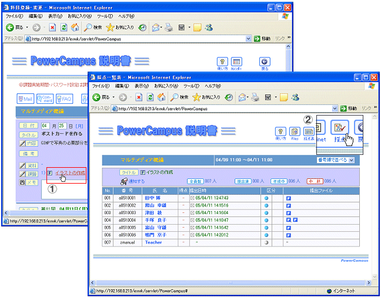
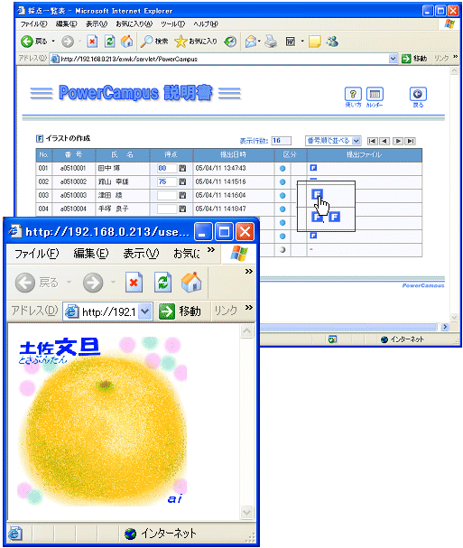
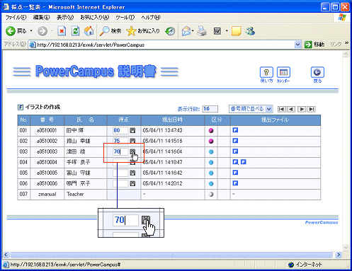
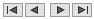
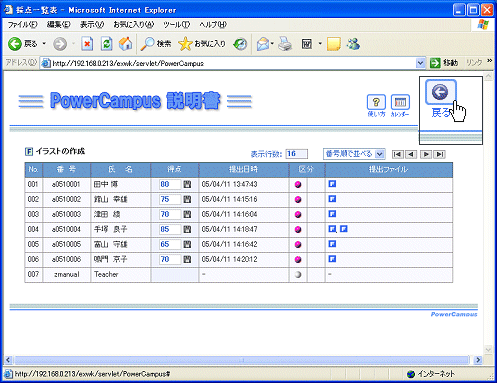
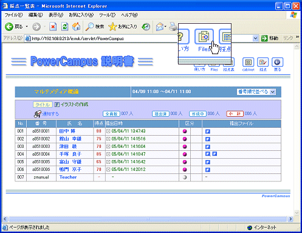
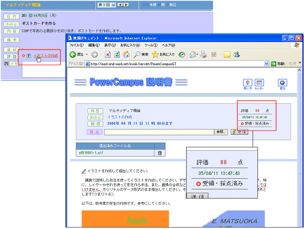

ファイル提出課題の出題と採点 － (2)採点と通知
ファイル提出課題の採点
ファイル提出課題は専用の採点フォームを持っていますので，ファイルの内容を見ながらすばやく採点できます．
採点画面を開く
採点画面を開くまでは，どの課題も同じ操作になります．講義画面で課題タイトルをクリックした後，課題画面で採点ボタンをクリックします．

学生は複数のファイルを提出できます．
ファイル名はどんなものでも自動的に「
学籍番号－連番
」に変えられます．ファイルの拡張子は変わりません．また，この例では二つのファイルを送信している学生がいますが，
後に送信したものが右側に並びます．
学生は，送信したファイルを消すこともできるようになっているので，無駄なファイルは削除するよう指導してください．
ファイルの内容を見ながら評価する
提出ファイルは一覧表にアイコン で表示されます．Windowsのアプリケーションで作成したデータファイルは，アイコンをクリックするだけで，アプリケーションが起動して，中身を見ることができます．このアイコンをクリックして内容を表示させでください．

評価点を欄に記入し
をクリックする
得点は一覧表の得点欄に記入し，
で書き込みます．欄に数字を書き込むたびに
をクリックしてください．先に全ての欄に得点を記入し，
あとでまとめて
をクリックするという使い方はできません．

採点画面での操作補足
１ページに何件のデータを表示するか指定します
番号順で並べるか，提出時間順でな並べるか指定します

ページ送りボタンです，左から，先頭－前－次－最後の順です
全ての採点が終わったら戻るボタンで課題画面に戻る

課題画面で採点結果を確認する
課題画面でも をクリックしてファイルを開くことができます．レポート課題の章で述べたように，
採点表
ボタンをクリックすると，CSVファイル形式での採点表をファイルキャビネットに取得できます．
ファイル提出課題では．さらに，提出されたファイルをzip形式にまとめて一括ダウンロードすることができます．図に示した
files
ボタンをクリックすると，クラス全員分のデータをzipファイルにしたものが，ファイルキャビネットに登録されます．

採点結果の通知
採点結果はリアルタイムに学生のウェブに表示されます．
２通りの方法
レポート課題でも説明したように，学生のウェブには常にリアルタイムで自動的に結果が表示されます．また，課題画面の通知するボタンをクリックすると電子メールで一斉に通知できます．内容は各人ごとに違うので，差込みメールが一斉通信されます．学生画面の様子を下に示します．
参照：「
電子メールでの通知
」


 ファイル提出課題の採点
ファイル提出課題の採点

 学生は複数のファイルを提出できます．
学生は複数のファイルを提出できます．


 をクリックする
をクリックする

 ２通りの方法
２通りの方法